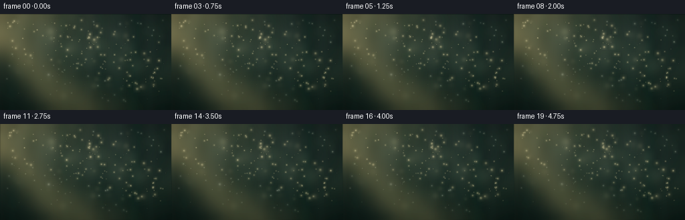
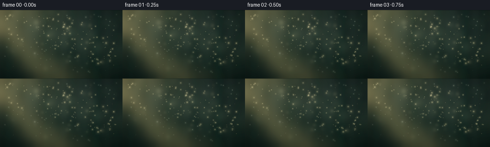

CODING AGENTS AS PIXEL WORLD MODELS
traex/GPT-5.6-Sol · phygen_079
点击播放 · 原生 RGB 像素
逐轮保存的候选
回放视频、检查图与代码变化。
每份候选均可单独播放。实际图片检查记录在下方工具轨迹中。
候选 01播放与检查图
点击播放 · 原生 RGB 像素


展开代码变化
--- 上一保存版本
+++ 本次保存版本
@@ -0,0 +1,188 @@
+#!/usr/bin/env python3
+"""Procedurally render sunlight catching suspended airborne mist particles."""
+from pathlib import Path
+import math
+import numpy as np
+import cv2
+from PIL import Image, ImageDraw, ImageFilter
+import artifact_io
+
+W, H, N, FPS = 256, 144, 20, 4.0
+S = 2
+RW, RH = W*S, H*S
+rng = np.random.default_rng(79031)
+
+# Coordinate fields at render resolution.
+yy, xx = np.mgrid[0:RH, 0:RW].astype(np.float32)
+xn, yn = xx/RW, yy/RH
+
+# A quiet, shaded woodland backdrop: the darkness makes illuminated mist legible.
+top = np.array([31, 49, 48], np.float32)
+bottom = np.array([17, 35, 32], np.float32)
+base = top[None,None,:]*(1-yn[...,None]) + bottom[None,None,:]*yn[...,None]
+# Warm skylight entering from the upper-left.
+skyglow = np.exp(-(((xn-.08)/.45)**2 + ((yn+.04)/.55)**2)*1.5)[...,None]
+base += skyglow*np.array([43, 42, 25], np.float32)
+# Gentle vignette.
+vig = np.clip(1 - .35*((xn-.50)**2/.38 + (yn-.47)**2/.45), .58, 1)[...,None]
+base *= vig
+
+# Defocused vertical trunks and distant foliage.
+bg = Image.fromarray(np.uint8(np.clip(base,0,255)), 'RGB')
+trunks = Image.new('RGBA', (RW,RH), (0,0,0,0)); td = ImageDraw.Draw(trunks)
+for x, wid, shade, alpha in [(31,14,9,75),(91,9,12,72),(186,18,7,88),(237,11,8,72),(302,15,8,80),(407,22,5,100),(482,12,8,75)]:
+ lean = rng.uniform(-10,10)
+ td.polygon([(x-wid,-8),(x+wid,-8),(x+wid+lean,RH+8),(x-wid+lean,RH+8)], fill=(shade,22+shade,19+shade,alpha))
+trunks = trunks.filter(ImageFilter.GaussianBlur(6*S))
+bg = Image.alpha_composite(bg.convert('RGBA'), trunks)
+fol = Image.new('RGBA',(RW,RH),(0,0,0,0)); fd=ImageDraw.Draw(fol)
+for _ in range(95):
+ x=float(rng.uniform(-25,RW+25)); y=float(rng.uniform(-20,RH*0.95))
+ r=float(rng.uniform(7,28)*S); a=int(rng.uniform(8,24))
+ col=(29+int(rng.uniform(0,15)), 53+int(rng.uniform(0,25)), 38+int(rng.uniform(0,13)), a)
+ fd.ellipse((x-r,y-r*.62,x+r,y+r*.62),fill=col)
+fol=fol.filter(ImageFilter.GaussianBlur(8*S)); bg=Image.alpha_composite(bg,fol)
+STATIC=np.asarray(bg.convert('RGB'),np.float32)
+
+# Static broad shafts radiating from a source just beyond the upper-left corner.
+sun_origin=(-46*S,-23*S)
+ray_specs=[((78,135),28,0.13),((122,156),38,.10),((170,186),48,.075),((230,205),56,.052),((275,225),62,.035)]
+ray_base=np.zeros((RH,RW),np.float32)
+for (ex,ey), width, strength in ray_specs:
+ layer=Image.new('L',(RW,RH),0); d=ImageDraw.Draw(layer)
+ ox,oy=sun_origin
+ # Long softly feathered triangular shafts.
+ d.polygon([(ox,oy),(ex*S-width*S,ey*S),(ex*S+width*S,ey*S)],fill=int(255*strength))
+ arr=np.asarray(layer,np.float32)/255
+ arr=cv2.GaussianBlur(arr,(0,0),10*S)
+ ray_base += arr
+# luminous source spill and broad diagonal haze.
+source=np.exp(-(((xx+24*S)/(112*S))**2+((yy+18*S)/(75*S))**2)*1.3)
+ray_base += source*.34
+
+# Smooth random fog texture, later translated slightly each frame.
+def smooth_noise(h,w, scale, seed):
+ rr=np.random.default_rng(seed)
+ sh=max(2,h//scale); sw=max(2,w//scale)
+ a=rr.normal(0,1,(sh,sw)).astype(np.float32)
+ a=cv2.resize(a,(w,h),interpolation=cv2.INTER_CUBIC)
+ a=cv2.GaussianBlur(a,(0,0),scale*.28)
+ a=(a-a.min())/(a.max()-a.min()+1e-6)
+ return a
+fog1=smooth_noise(RH,RW,28,820)
+fog2=smooth_noise(RH,RW,55,112)
+fogtex=.63*fog1+.37*fog2
+# Mist occupies the diagonal cone, plus a central suspended cloud.
+beam_axis=np.exp(-((yn-(.05+.54*xn))/.23)**2)
+central=np.exp(-(((xn-.51)/.46)**2+((yn-.47)/.48)**2))
+fogmask=(.55*beam_axis+.45*central)*np.clip(1.1-yn*.55,.35,1)
+
+# Particle inventory. Positions are normalized, concentrated inside the sunlight.
+particles=[]
+for i in range(210):
+ # Rejection sample for a diagonal bunch, with a few edge motes.
+ for _ in range(50):
+ x=rng.uniform(.035,.96); y=rng.uniform(.06,.92)
+ prob=.18+.82*math.exp(-((y-(.08+.56*x))/.29)**2)
+ if rng.random()<prob: break
+ z=rng.random() # depth: high is close and more defocused
+ particles.append(dict(x=x,y=y,z=z,
+ r=rng.uniform(.28,1.05)*(0.55+1.3*z),
+ phase=rng.uniform(0,2*np.pi),
+ vx=rng.uniform(-.0018,.0024), vy=rng.uniform(-.0022,.0008),
+ amp=rng.uniform(.001,.006), bright=rng.uniform(.55,1.0)))
+# Larger near-lens mist orbs / bokeh.
+bokeh=[]
+for i in range(25):
+ x=rng.uniform(.04,.96); y=rng.uniform(.08,.9)
+ z=rng.uniform(.68,1)
+ bokeh.append(dict(x=x,y=y,r=rng.uniform(2.2,6.5), phase=rng.uniform(0,6.28),
+ vx=rng.uniform(-.001,.0015),vy=rng.uniform(-.0012,.0008),alpha=rng.uniform(.025,.105)))
+
+
+def add_soft_disc(layer, cx, cy, radius, color, alpha, halo=True):
+ """Add a naturally feathered droplet with a bright optical core."""
+ if radius < .7:
+ ix=int(round(cx)); iy=int(round(cy))
+ if 0<=ix<RW and 0<=iy<RH:
+ layer[iy,ix,:] += np.array(color)*alpha
+ return
+ pad=max(2,int(radius*3.2)); x0=max(0,int(cx-pad)); x1=min(RW,int(cx+pad+1)); y0=max(0,int(cy-pad)); y1=min(RH,int(cy+pad+1))
+ if x0>=x1 or y0>=y1:return
+ qx=np.arange(x0,x1)-cx; qy=np.arange(y0,y1)-cy
+ rr2=qy[:,None]**2+qx[None,:]**2
+ sig=max(.45,radius*.70)
+ profile=np.exp(-rr2/(2*sig*sig))
+ if halo: profile += .20*np.exp(-rr2/(2*(radius*1.8)**2))
+ layer[y0:y1,x0:x1,:] += profile[...,None]*np.array(color,np.float32)*alpha
+
+
+def render(k):
+ t=k/FPS
+ arr=STATIC.copy()
+ # Very slow camera breathing gives the static woodland subtle life.
+ dx=int(round(math.sin(t*.48)*1.0*S)); dy=int(round(math.cos(t*.37)*.45*S))
+ arr=np.roll(arr,(dy,dx),(0,1))
+
+ # Sun shafts pulse almost imperceptibly as leaves move outside view.
+ rays=ray_base*(.92+.06*math.sin(.65*t+1.0)+.025*math.sin(1.7*t))
+ arr += rays[...,None]*np.array([185,158,91],np.float32)
+
+ # Slowly advected semi-transparent fog, visible only in the light cone.
+ fx=int(round(t*1.35*S)); fy=int(round(-t*.32*S))
+ moving=np.roll(fogtex,(fy,fx),(0,1))
+ wisps=np.clip((moving-.38)*1.25,0,1)*fogmask
+ # A second ultra-soft breathing variation avoids a rigid translated texture.
+ wisps *= .88+.12*np.sin(t*.55 + xn*5.2 + yn*2.1)
+ arr += wisps[...,None]*np.array([36,42,35],np.float32)
+
+ # A faint veil in the middle distance.
+ veil=np.exp(-(((xn-(.48+.008*math.sin(t*.5)))/.42)**2 + ((yn-.47)/.31)**2)*1.4)
+ veil*=beam_axis*(.12+.018*math.sin(t*.7))
+ arr += veil[...,None]*np.array([105,112,87],np.float32)
+
+ # Fine airborne droplets, with shallow circular convection and irregular twinkle.
+ glow=np.zeros_like(arr)
+ for i,p in enumerate(particles):
+ ph=p['phase'];
+ x=(p['x'] + p['vx']*t + p['amp']*math.sin(.54*t+ph))%1.02
+ y=(p['y'] + p['vy']*t + p['amp']*.60*math.cos(.43*t+ph*1.31))%1.0
+ cx=x*RW; cy=y*RH
+ localbeam=math.exp(-((y-(.06+.55*x))/.30)**2)
+ tw=.78+.22*math.sin(.72*t+ph+i*.17)**2
+ a=p['bright']*(.28+.72*localbeam)*tw
+ z=p['z']; r=p['r']*S
+ # Far droplets are tiny points; near ones have diffused halos.
+ color=(255,239,173) if localbeam>.42 else (196,215,199)
+ add_soft_disc(glow,cx,cy,r,color,a*.60,halo=(z>.28))
+ if r>1.6:
+ add_soft_disc(glow,cx-r*.14,cy-r*.15,max(.35,r*.18),(255,252,218),a*.72,False)
+ # Soft bokeh droplets near the focal extremes.
+ for p in bokeh:
+ x=p['x']+p['vx']*t+.004*math.sin(.31*t+p['phase'])
+ y=p['y']+p['vy']*t+.003*math.cos(.27*t+p['phase'])
+ local=math.exp(-((y-(.06+.55*x))/.34)**2)
+ add_soft_disc(glow,x*RW,y*RH,p['r']*S,(233,227,172),p['alpha']*(.35+.65*local),True)
+ arr += glow
+
+ # Mild cinematic grade and compression of highlights.
+ arr=np.clip(arr,0,None)
+ arr=255*(1-np.exp(-arr/226.0))
+ arr[...,0]*=1.055; arr[...,1]*=1.015; arr[...,2]*=.94
+ arr=np.clip(arr,0,255).astype(np.uint8)
+ # Supersampled antialiasing.
+ out=cv2.resize(arr,(W,H),interpolation=cv2.INTER_AREA)
+ # Minimal local contrast, preserving soft atmosphere.
+ soft=cv2.GaussianBlur(out,(0,0),.65)
+ out=np.clip(out.astype(np.float32)*1.07-soft.astype(np.float32)*.07,0,255).astype(np.uint8)
+ return out
+
+
+def main():
+ frames=np.stack([render(i) for i in range(N)],axis=0)
+ assert frames.shape==(N,H,W,3) and frames.dtype==np.uint8
+ artifact_io.save(frames, Path(__file__).resolve().parent)
+ print('saved',frames.shape,'range',frames.min(),frames.max(), 'mean',round(float(frames.mean()),2))
+
+if __name__=='__main__':
+ main()
可观测工具轨迹
实际执行的命令与返回图片。
命令 1exit 0
/bin/bash -lc "cat prompt.txt && printf '\\n--- RULES ---\\n' && cat GENERATION_RULES.md && printf '\\n--- SPEC ---\\n' && cat task_spec.json"
命令 2exit 1
/bin/bash -lc "find . -maxdepth 2 -type f -printf '%p\\n' | sort && printf '\\nTOOLS\\n' && command -v ffmpeg && command -v python3 && python3 - <<'PY'
try:
import cv2; print('cv2',cv2.__version__)
except Exception as e: print('no cv2',e)
try:
import numpy; print('numpy',numpy.__version__)
except Exception as e: print('no numpy',e)
try:
from PIL import Image; print('PIL ok')
except Exception as e: print('no PIL',e)
PY"命令 3exit 0
/bin/bash -lc 'cat artifact_io.py'
命令 4exit 0
/bin/bash -lc "command -v ffmpeg || true; command -v python3 || true; python3 - <<'PY' mods=['numpy','PIL','cv2','imageio','scipy'] for m in mods: try: x=__import__(m); print(m,'OK',getattr(x,'__version__','')) except Exception as e: print(m,'NO',e) PY"
命令 5exit 0
/bin/bash -lc "cat > generate.py <<'PY'
#"'!/usr/bin/env python3
"""Procedurally render sunlight catching suspended airborne mist particles."""
from pathlib import Path
import math
import numpy as np
import cv2
from PIL import Image, ImageDraw, ImageFilter
import artifact_io
W, H, N, FPS = 256, 144, 20, 4.0
S = 2
RW, RH = W*S, H*S
rng = np.random.default_rng(79031)
# Coordinate fields at render resolution.
yy, xx = np.mgrid[0:RH, 0:RW].astype(np.float32)
xn, yn = xx/RW, yy/RH
# A quiet, shaded woodland backdrop: the darkness makes illuminated mist legible.
top = np.array([31, 49, 48], np.float32)
bottom = np.array([17, 35, 32], np.float32)
base = top[None,None,:]*(1-yn[...,None]) + bottom[None,None,:]*yn[...,None]
# Warm skylight entering from the upper-left.
skyglow = np.exp(-(((xn-.08)/.45)**2 + ((yn+.04)/.55)**2)*1.5)[...,None]
base += skyglow*np.array([43, 42, 25], np.float32)
# Gentle vignette.
vig = np.clip(1 - .35*((xn-.50)**2/.38 + (yn-.47)**2/.45), .58, 1)[...,None]
base *= vig
# Defocused vertical trunks and distant foliage.
bg = Image.fromarray(np.uint8(np.clip(base,0,255)), '"'RGB')
trunks = Image.new('RGBA', (RW,RH), (0,0,0,0)); td = ImageDraw.Draw(trunks)
for x, wid, shade, alpha in [(31,14,9,75),(91,9,12,72),(186,18,7,88),(237,11,8,72),(302,15,8,80),(407,22,5,100),(482,12,8,75)]:
lean = rng.uniform(-10,10)
td.polygon([(x-wid,-8),(x+wid,-8),(x+wid+lean,RH+8),(x-wid+lean,RH+8)], fill=(shade,22+shade,19+shade,alpha))
trunks = trunks.filter(ImageFilter.GaussianBlur(6*S))
bg = Image.alpha_composite(bg.convert('RGBA'), trunks)
fol = Image.new('RGBA',(RW,RH),(0,0,0,0)); fd=ImageDraw.Draw(fol)
for _ in range(95):
x=float(rng.uniform(-25,RW+25)); y=float(rng.uniform(-20,RH*0.95))
r=float(rng.uniform(7,28)*S); a=int(rng.uniform(8,24))
col=(29+int(rng.uniform(0,15)), 53+int(rng.uniform(0,25)), 38+int(rng.uniform(0,13)), a)
fd.ellipse((x-r,y-r*.62,x+r,y+r*.62),fill=col)
fol=fol.filter(ImageFilter.GaussianBlur(8*S)); bg=Image.alpha_composite(bg,fol)
STATIC=np.asarray(bg.convert('RGB'),np.float32)
# Static broad shafts radiating from a source just beyond the upper-left corner.
sun_origin=(-46*S,-23*S)
ray_specs=[((78,135),28,0.13),((122,156),38,.10),((170,186),48,.075),((230,205),56,.052),((275,225),62,.035)]
ray_base=np.zeros((RH,RW),np.float32)
for (ex,ey), width, strength in ray_specs:
layer=Image.new('L',(RW,RH),0); d=ImageDraw.Draw(layer)
ox,oy=sun_origin
# Long softly feathered triangular shafts.
d.polygon([(ox,oy),(ex*S-width*S,ey*S),(ex*S+width*S,ey*S)],fill=int(255*strength))
arr=np.asarray(layer,np.float32)/255
arr=cv2.GaussianBlur(arr,(0,0),10*S)
ray_base += arr
# luminous source spill and broad diagonal haze.
source=np.exp(-(((xx+24*S)/(112*S))**2+((yy+18*S)/(75*S))**2)*1.3)
ray_base += source*.34
# Smooth random fog texture, later translated slightly each frame.
def smooth_noise(h,w, scale, seed):
rr=np.random.default_rng(seed)
sh=max(2,h//scale); sw=max(2,w//scale)
a=rr.normal(0,1,(sh,sw)).astype(np.float32)
a=cv2.resize(a,(w,h),interpolation=cv2.INTER_CUBIC)
a=cv2.GaussianBlur(a,(0,0),scale*.28)
a=(a-a.min())/(a.max()-a.min()+1e-6)
return a
fog1=smooth_noise(RH,RW,28,820)
fog2=smooth_noise(RH,RW,55,112)
fogtex=.63*fog1+.37*fog2
# Mist occupies the diagonal cone, plus a central suspended cloud.
beam_axis=np.exp(-((yn-(.05+.54*xn))/.23)**2)
central=np.exp(-(((xn-.51)/.46)**2+((yn-.47)/.48)**2))
fogmask=(.55*beam_axis+.45*central)*np.clip(1.1-yn*.55,.35,1)
# Particle inventory. Positions are normalized, concentrated inside the sunlight.
particles=[]
for i in range(210):
# Rejection sample for a diagonal bunch, with a few edge motes.
for _ in range(50):
x=rng.uniform(.035,.96); y=rng.uniform(.06,.92)
prob=.18+.82*math.exp(-((y-(.08+.56*x))/.29)**2)
if rng.random()<prob: break
z=rng.random() # depth: high is close and more defocused
particles.append(dict(x=x,y=y,z=z,
r=rng.uniform(.28,1.05)*(0.55+1.3*z),
phase=rng.uniform(0,2*np.pi),
vx=rng.uniform(-.0018,.0024), vy=rng.uniform(-.0022,.0008),
amp=rng.uniform(.001,.006), bright=rng.uniform(.55,1.0)))
# Larger near-lens mist orbs / bokeh.
bokeh=[]
for i in range(25):
x=rng.uniform(.04,.96); y=rng.uniform(.08,.9)
z=rng.uniform(.68,1)
bokeh.append(dict(x=x,y=y,r=rng.uniform(2.2,6.5), phase=rng.uniform(0,6.28),
vx=rng.uniform(-.001,.0015),vy=rng.uniform(-.0012,.0008),alpha=rng.uniform(.025,.105)))
def add_soft_disc(layer, cx, cy, radius, color, alpha, halo=True):
\"\"\"Add a naturally feathered droplet with a bright optical core.\"\"\"
if radius < .7:
ix=int(round(cx)); iy=int(round(cy))
if 0<=ix<RW and 0<=iy<RH:
layer[iy,ix,:] += np.array(color)*alpha
return
pad=max(2,int(radius*3.2)); x0=max(0,int(cx-pad)); x1=min(RW,int(cx+pad+1)); y0=max(0,int(cy-pad)); y1=min(RH,int(cy+pad+1))
if x0>=x1 or y0>=y1:return
qx=np.arange(x0,x1)-cx; qy=np.arange(y0,y1)-cy
rr2=qy[:,None]**2+qx[None,:]**2
sig=max(.45,radius*.70)
profile=np.exp(-rr2/(2*sig*sig))
if halo: profile += .20*np.exp(-rr2/(2*(radius*1.8)**2))
layer[y0:y1,x0:x1,:] += profile[...,None]*np.array(color,np.float32)*alpha
def render(k):
t=k/FPS
arr=STATIC.copy()
# Very slow camera breathing gives the static woodland subtle life.
dx=int(round(math.sin(t*.48)*1.0*S)); dy=int(round(math.cos(t*.37)*.45*S))
arr=np.roll(arr,(dy,dx),(0,1))
# Sun shafts pulse almost imperceptibly as leaves move outside view.
rays=ray_base*(.92+.06*math.sin(.65*t+1.0)+.025*math.sin(1.7*t))
arr += rays[...,None]*np.array([185,158,91],np.float32)
# Slowly advected semi-transparent fog, visible only in the light cone.
fx=int(round(t*1.35*S)); fy=int(round(-t*.32*S))
moving=np.roll(fogtex,(fy,fx),(0,1))
wisps=np.clip((moving-.38)*1.25,0,1)*fogmask
# A second ultra-soft breathing variation avoids a rigid translated texture.
wisps *= .88+.12*np.sin(t*.55 + xn*5.2 + yn*2.1)
arr += wisps[...,None]*np.array([36,42,35],np.float32)
# A faint veil in the middle distance.
veil=np.exp(-(((xn-(.48+.008*math.sin(t*.5)))/.42)**2 + ((yn-.47)/.31)**2)*1.4)
veil*=beam_axis*(.12+.018*math.sin(t*.7))
arr += veil[...,None]*np.array([105,112,87],np.float32)
# Fine airborne droplets, with shallow circular convection and irregular twinkle.
glow=np.zeros_like(arr)
for i,p in enumerate(particles):
ph=p['phase'];
x=(p['x'] + p['vx']*t + p['amp']*math.sin(.54*t+ph))%1.02
y=(p['y'] + p['vy']*t + p['amp']*.60*math.cos(.43*t+ph*1.31))%1.0
cx=x*RW; cy=y*RH
localbeam=math.exp(-((y-(.06+.55*x))/.30)**2)
tw=.78+.22*math.sin(.72*t+ph+i*.17)**2
a=p['bright']*(.28+.72*localbeam)*tw
z=p['z']; r=p['r']*S
# Far droplets are tiny points; near ones have diffused halos.
color=(255,239,173) if localbeam>.42 else (196,215,199)
add_soft_disc(glow,cx,cy,r,color,a*.60,halo=(z>.28))
if r>1.6:
add_soft_disc(glow,cx-r*.14,cy-r*.15,max(.35,r*.18),(255,252,218),a*.72,False)
# Soft bokeh droplets near the focal extremes.
for p in bokeh:
x=p['x']+p['vx']*t+.004*math.sin(.31*t+p['phase'])
y=p['y']+p['vy']*t+.003*math.cos(.27*t+p['phase'])
local=math.exp(-((y-(.06+.55*x))/.34)**2)
add_soft_disc(glow,x*RW,y*RH,p['r']*S,(233,227,172),p['alpha']*(.35+.65*local),True)
arr += glow
# Mild cinematic grade and compression of highlights.
arr=np.clip(arr,0,None)
arr=255*(1-np.exp(-arr/226.0))
arr[...,0]*=1.055; arr[...,1]*=1.015; arr[...,2]*=.94
arr=np.clip(arr,0,255).astype(np.uint8)
# Supersampled antialiasing.
out=cv2.resize(arr,(W,H),interpolation=cv2.INTER_AREA)
# Minimal local contrast, preserving soft atmosphere.
soft=cv2.GaussianBlur(out,(0,0),.65)
out=np.clip(out.astype(np.float32)*1.07-soft.astype(np.float32)*.07,0,255).astype(np.uint8)
return out
def main():
frames=np.stack([render(i) for i in range(N)],axis=0)
assert frames.shape==(N,H,W,3) and frames.dtype==np.uint8
artifact_io.save(frames, Path(__file__).resolve().parent)
print('saved',frames.shape,'range',frames.min(),frames.max(), 'mean',round(float(frames.mean()),2))
if __name__=='__main__':
main()
PY
python3 generate.py
ls -lh pixels.npz inspection.png transition_check.png index.html frames/00.png frames/19.png"命令 6exit 0
/bin/bash -lc "python3 - <<'PY'
from PIL import Image
import numpy as np
fs=np.stack([np.array(Image.open(f'frames/{i:02d}.png')) for i in range(20)])
Y=fs.mean(3)
print('frame means',np.round(Y.mean((1,2)),2))
print('Y pct',np.percentile(Y,[0,1,10,50,75,90,95,99,99.9,100]))
print('regions UL UR LL LR',*[round(Y[:,a:b,c:d].mean(),1) for a,b,c,d in [(0,72,0,128),(0,72,128,256),(72,144,0,128),(72,144,128,256)]])
d=np.abs(fs[1:].astype(int)-fs[:-1]).mean((1,2,3)); print('delta',np.round(d,2),'mean',d.mean())
print('changed fraction',np.mean(np.any(fs[1:]"'!=fs[:-1],3)))
PY'命令 7exit 0
/bin/bash -lc "python3 - <<'PY'
import json, numpy as np
from PIL import Image
spec=json.load(open('task_spec.json'))
z=np.load('pixels.npz')['pixels']
assert z.shape==(spec['height'],spec['width'],spec['frames'])
assert z.dtype==np.uint32
for i in range(spec['frames']):
im=Image.open(f'frames/{i:02d}.png')
assert im.mode=='RGB' and im.size==(spec['width'],spec['height'])
a=np.array(im,dtype=np.uint32)
p=(a[:,:,0]<<16)|(a[:,:,1]<<8)|a[:,:,2]
assert np.array_equal(p,z[:,:,i])
print('validation passed:', len(list(__import__('pathlib').Path('frames').glob('*.png'))), 'RGB frames,', z.shape, 'at',spec['fps'],'fps')
PY"保存候选 1 份；完成命令 7 次；可验证图片返回 0 张。原始 API 响应与完整日志保留在本地。